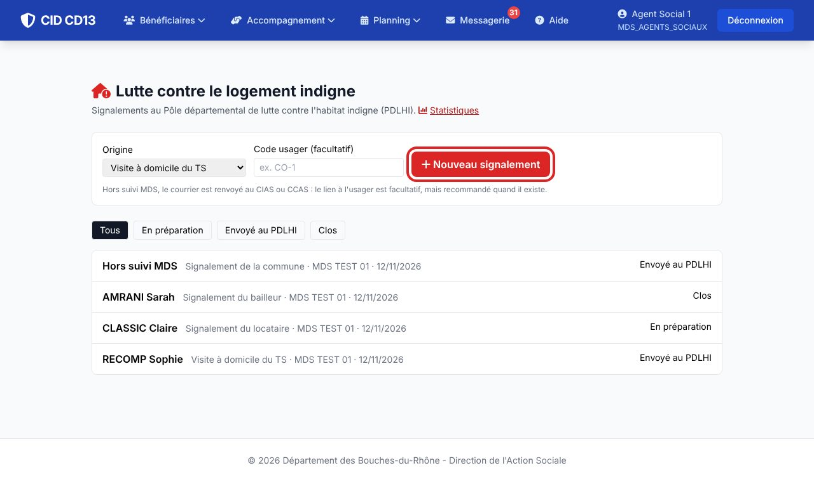
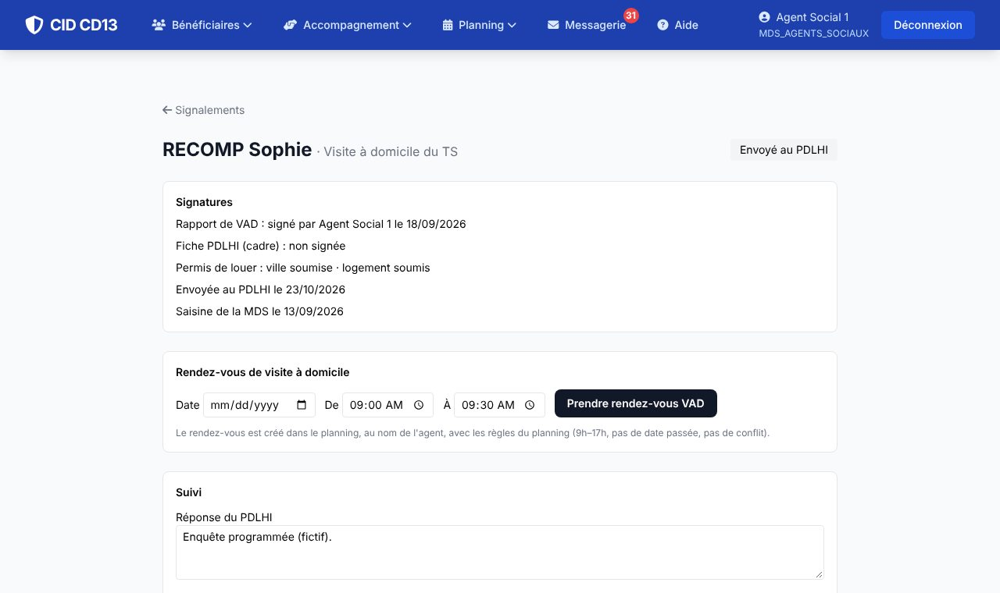
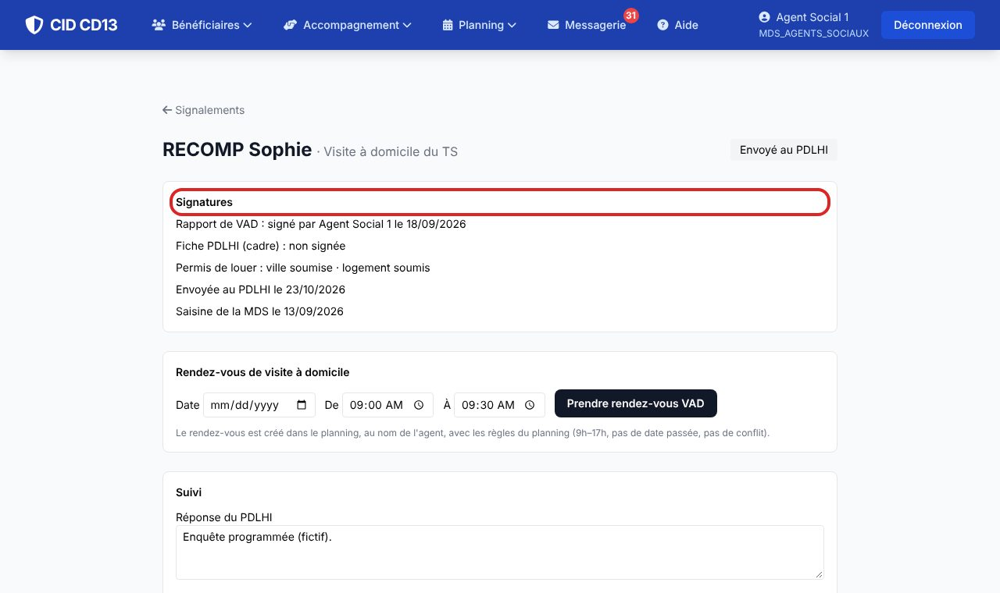
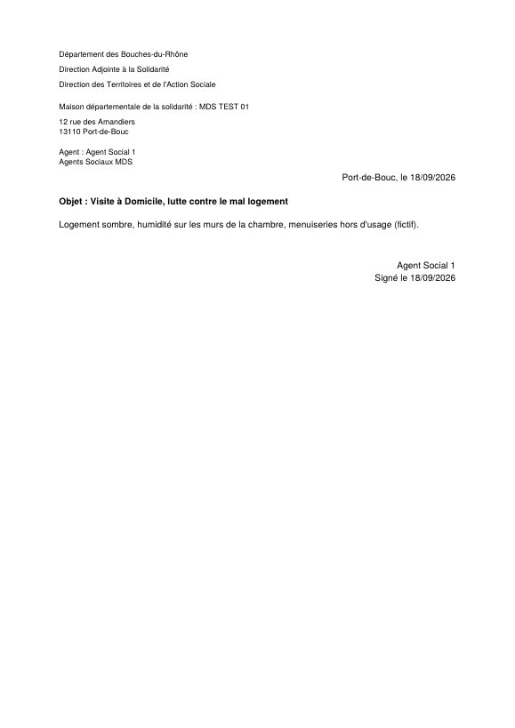
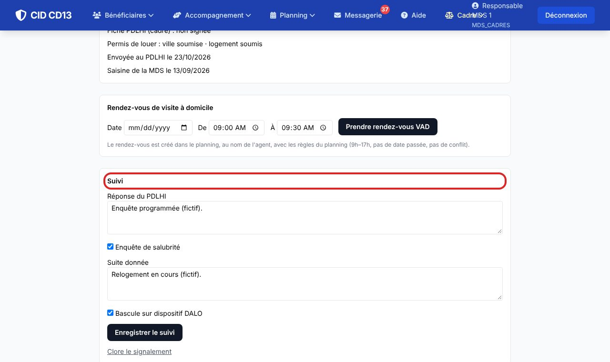
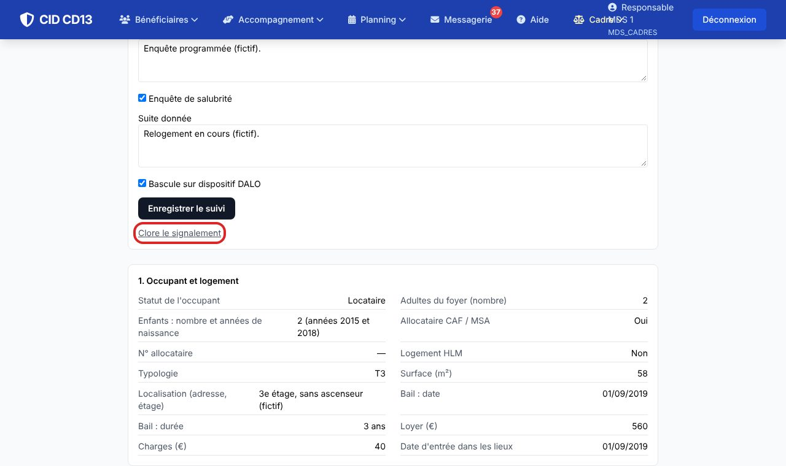
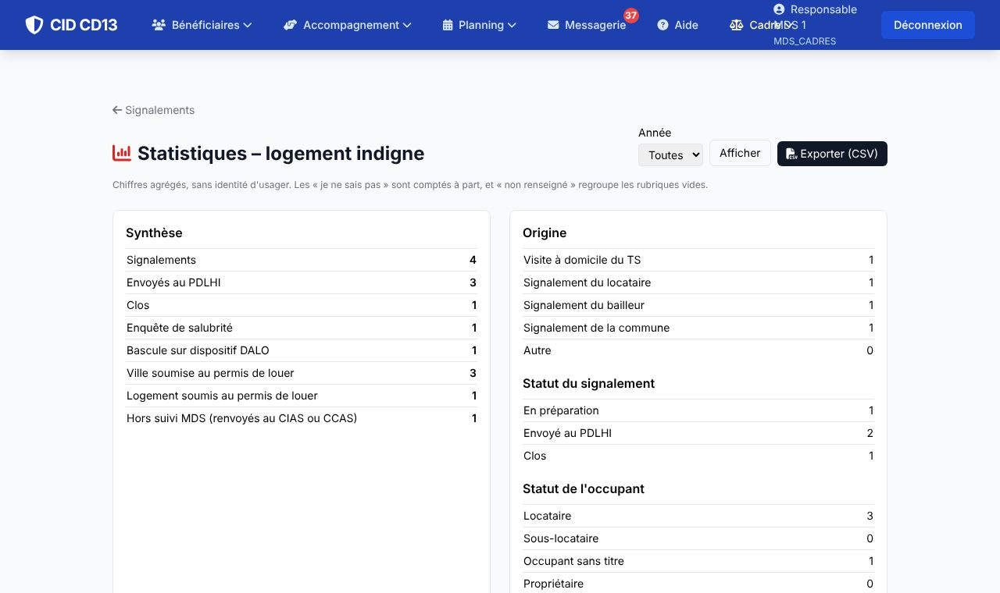

Avant de commencer
- Seul un agent de la MDS saisit le signalement : le locataire ou le bailleur ne le fait pas. La parole du TS prime sur les déclarations.
- Pour un usager suivi, ouvrez le signalement depuis sa fiche : il reste ainsi rattaché à son dossier.
1Ouvrir le signalement

- Menu Logement indigne, puis Nouveau signalement : choisissez l'origine (visite à domicile du TS, locataire, bailleur, commune, autre) et, si l'usager est suivi, son code.
- Depuis la fiche usager, le bouton Signalement logement indigne (PDLHI) ouvre le signalement déjà rattaché.
2Renseigner la fiche et la visite

- Saisissez les rubriques de la fiche PDLHI : occupant et logement, bâtiment, habitabilité, menuiseries, équipements, propriétaire, divers, démarches. Pour chaque point, répondez oui, non, « je ne sais pas » ou laissez vide : CID garde ces trois réponses distinctes.
- Renseignez le permis de louer : ville soumise, logement soumis. Si le logement n'est pas soumis parce que le propriétaire a échappé au dispositif, signalez-le quand même à la ville.
- Indiquez la date de saisine de la MDS, puis rédigez le rapport de VAD. Vous pouvez aussi créer le rendez-vous de visite depuis le signalement : il s'inscrit dans votre planning, dans l'agenda des VAD.
Le rapport de visite est un document distinct de la fiche PDLHI : il se tire en PDF depuis le signalement.
3Signer

- Le rapport de VAD est signé par le TS : la signature demande un rapport rédigé et une date de saisine. La visite est alors inscrite au journal de l'accompagnement.
- La fiche PDLHI est signée par le cadre de la MDS.
- Toute modification après signature retire la signature : elle doit être refaite.
Tant que la fiche n'est pas signée par le cadre, elle ne peut pas être envoyée au PDLHI.
4Envoyer et suivre


- Une fois la fiche signée, envoyez-la au PDLHI. Notez ensuite la date d'envoi, la réponse du PDLHI, l'enquête de salubrité éventuelle et la suite donnée.
- Si la situation bascule vers le dispositif DALO, cochez Bascule sur dispositif DALO : le recours se prépare depuis la fiche de l'usager.
5Clore


- Lorsque la suite est connue, clôturez le signalement. Il reste consultable et compté dans les statistiques.
Bon à savoir
- Le signalement d'une personne sans lien avec la MDS n'est pas traité par la MDS : le courrier est renvoyé au CIAS ou au CCAS. Le lien à l'usager reste facultatif dans ce cas.
- Les statistiques (liste « Logement indigne », lien Statistiques) comptent les réponses oui, non et « je ne sais pas » séparément, et s'exportent en CSV sans identité d'usager. Un agent ne voit que les signalements de sa MDS, sauf habilitation départementale.
Et ensuite ?
Cliquez sur une image pour l'agrandir. Le cadre rouge montre où cliquer ou quoi remplir. Toutes les données affichées sont fictives.